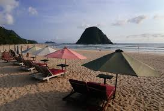
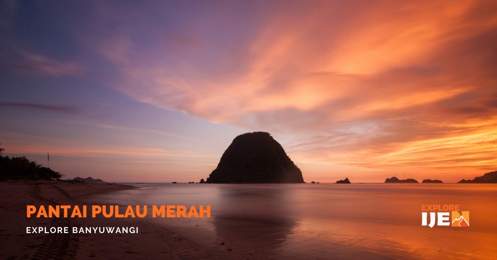
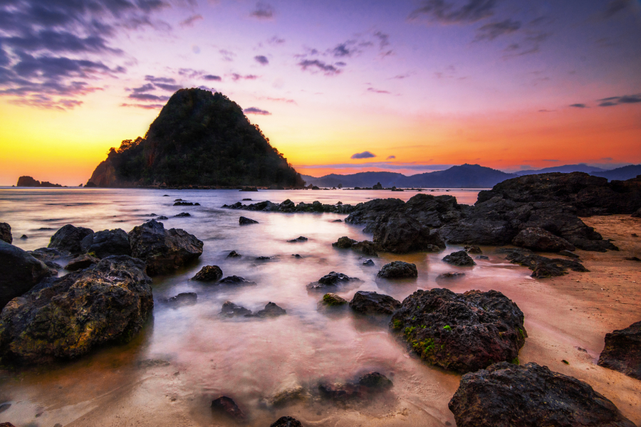

Pulau Merah
Destinasi wisata dengan pemandangan pulau berbias cahaya kemerahan
Galeri Foto





Informasi Detail
Pulau Merah adalah destinasi wisata pantai populer yang terletak di Banyuwangi, Jawa Timur. Pantai ini terkenal dengan bukit kecil berwarna kemerahan di tepi pantai yang bisa diakses dengan berjalan kaki saat air surut, dan merupakan lokasi yang sangat baik untuk menikmati matahari terbenam yang indah.
Keunikan
- Pulau Kecil Bertanah Merah: Keunikan yang paling menonjol adalah keberadaan sebuah bukit kecil di dekat bibir pantai yang tanahnya berwarna merah, mirip batu bata.
- Destinasi Selancar (Surfing) Pemula: Meskipun ombaknya terkenal, pantai ini memiliki gulungan ombak yang relatif stabil dan tidak terlalu besar, membuatnya ideal serta direkomendasikan untuk peselancar pemula, baik lokal maupun internasional.
- Pemandangan Matahari Terbenam yang Memukau: Pantai ini menawarkan pemandangan matahari terbenam yang sangat indah dan romantis. Cahaya matahari terbenam yang memantul di air laut menambah pesona alamnya yang luar biasa.
- Situs Warisan Geologi dan Wisata Religi: Kawasan ini juga merupakan situs warisan geologi dengan batuan tertua, menawarkan wawasan sejarah dan budaya. Selain itu, terdapat Pura Tawang Alun di dekatnya yang menjadi tempat ibadah dan ritual keagamaan umat Hindu, menambah dimensi wisata religi di area tersebut.
- Pasir Putih yang Lembut: Selain bukit merahnya, pantai ini memiliki garis pantai berpasir putih lembut sepanjang 3 km, cocok untuk bersantai dan menikmati suasana tropis yang tenang.
Aktivitas yang Bisa Dilakukan
- Berselancar atau Surfing
- Tur dengan Perahu
- Snorkeling
- Menikmati Matahari Terbenam (Sunset)
- Mengunjungi "Pulau" Merah
- Bersantai di Tepi Pantai
- Wisata Religi
- Belajar Sejarah dan Geologi
- Wisata Kuliner Khas
Info Praktis
- Lokasi:Dusun Pancer, Desa Sumberagung, Kecamatan Pesanggaran, Kabupaten Banyuwangi
- Biaya Masuk: Rp 10.000 - Rp 15.000 per orang
- Waktu Terbaik Berkunjung: Pada saat weekday, pukul 15.00 - 17.00 WIB
- Transportasi: kendaraan pribadi (mobil atau motor). Perjalanan memakan waktu sekitar 1,5 hingga 2 jam.
- Akomodasi: Di sekitar area Pulau Merah, terdapat banyak pilihan penginapan, mulai dari guest house yang ramah di kantong hingga resort.
Peraturan Kunjungan
- Patuhi Petunjuk Penjaga Pantai/SAR
- Perhatikan Bendera Peringatan
- Tidak Membuang Sampah Sembarangan
- Menghormati Adat Lokal